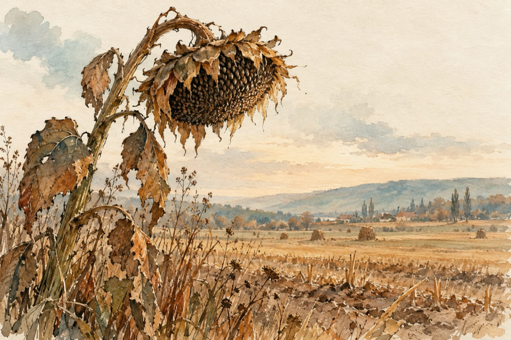

Da e toamnă
Da e toamnă cu adevărat.
Soarele și-a copt semințele
În floarea soarelui ce s-a uscat,
Și zumzăie pe câmp combinele!
Da e toamnă cu adevărat.
Privim natura cu o oarecare nostalgie.
Câmpul cu roadele s-a împovărat,
S-au copt strugurii hazlii în vie!...
Da e toamnă cu adevărat.
Pe drumuri scârțâie-ncărcate carele,
Țăranii s-au îndestulat
Gem butoaiele, s-au burdușit hambarele!
Da e toamnă cu adevărat.
Pădurile au ruginit multicolor,
Pictorii naturii, cu razele de soare-au colorat.
Peste poeți năvală-au dat
Sentimentele de dragoste și dor!
Da e toamnă cu adevărat
O simt în părul meu ce s-a albit.
Și-n chipul meu ce s-a schimbat,
Oglinda mi-a șoptit în ea când m-am privit.
Da este adevărat, toamna a venit!...
Vasile Groza